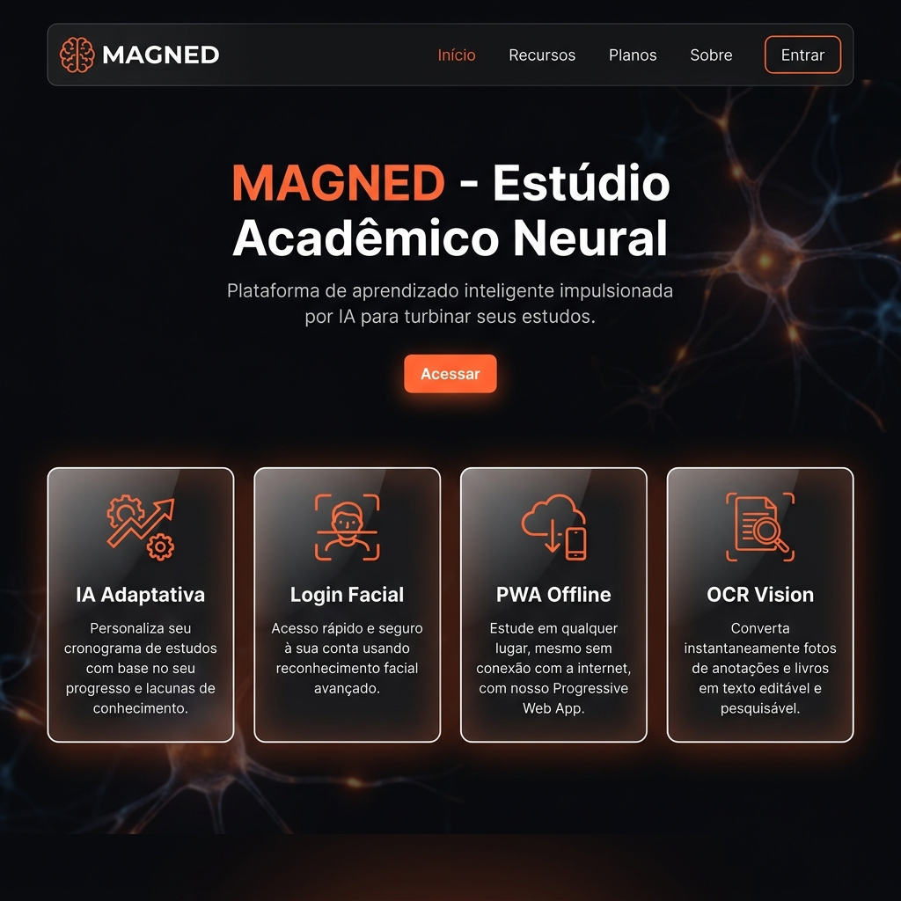
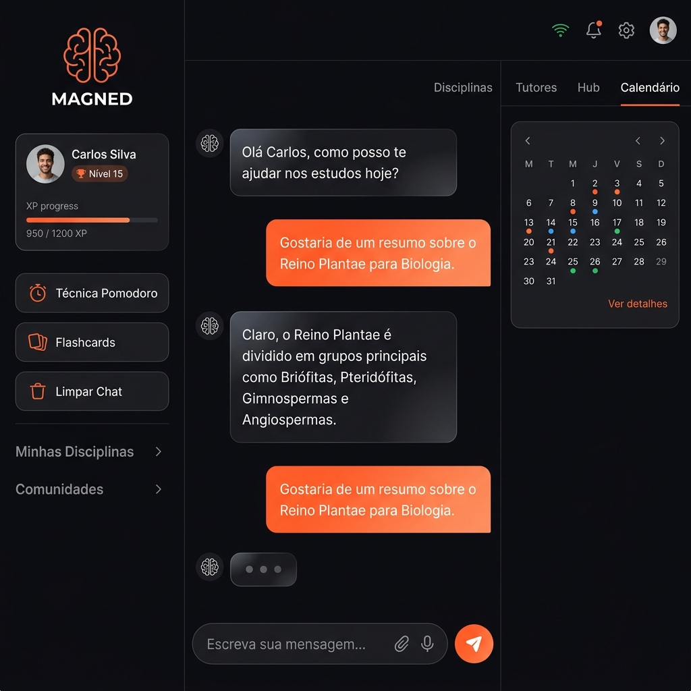
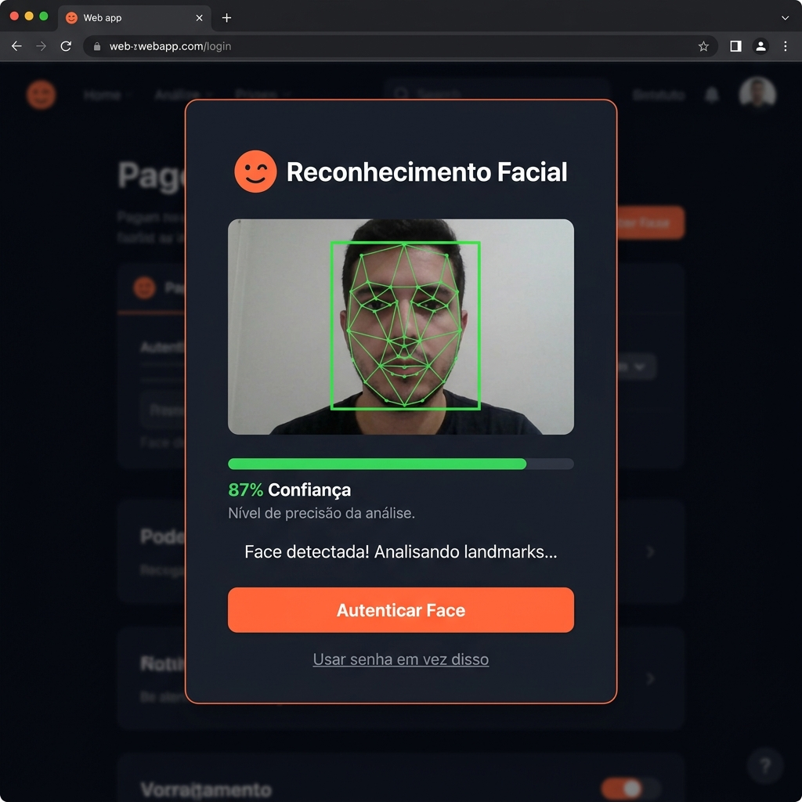
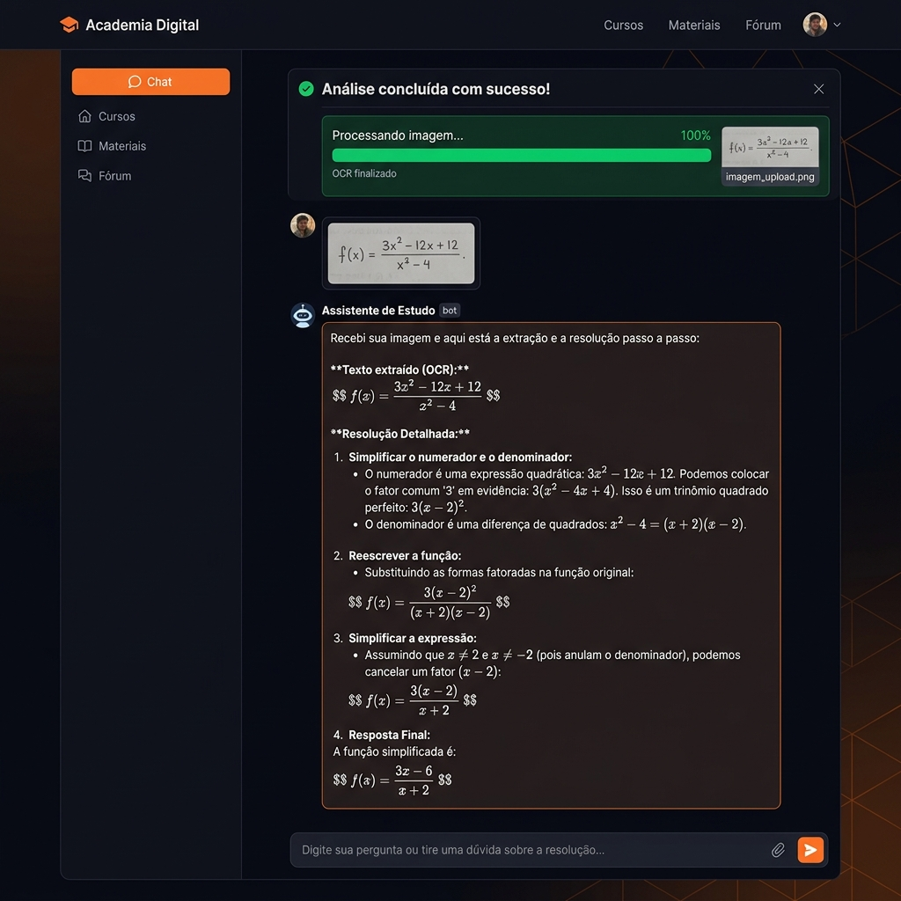
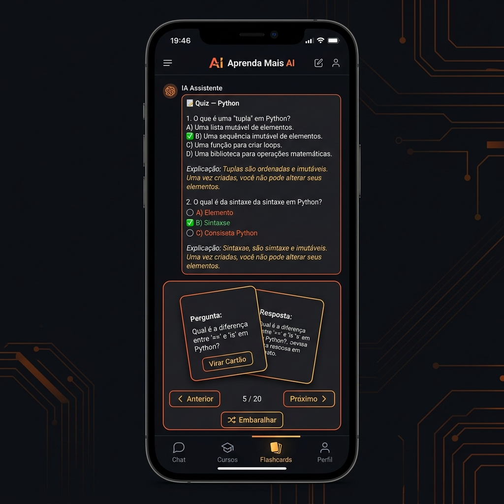

Módulo Avançado de Gestão Neural e Execução de Dados
| Projeto | MAGNED — Módulo Avançado de Gestão Neural e Execução de Dados |
|---|---|
| Disciplina | Engenharia de Soluções |
| Instituição | UniEVANGÉLICA — Centro Universitário de Anápolis |
| Curso | Engenharia de Software |
| Grupo | Grupo 01 |
| Integrantes | Augusto César, Eduardo Felipe, Gabriel de Freitas, Marcel Eduardo, Nicolas Vinícius |
| Entrega | 3ª Entrega — Versão Final e Apresentação (Semana 19) |
| Data | Junho de 2026 |
| Repositório | github.com/grupo01-bit/MAGNED |
O MAGNED é uma plataforma acadêmica inteligente desenvolvida como Progressive Web App (PWA) que combina inteligência artificial local, reconhecimento facial biométrico, processamento de imagem via OCR e sincronização em nuvem para criar um ecossistema de aprendizado completo e inovador.
O sistema foi projetado para resolver dores reais do ecossistema acadêmico da UniEVANGÉLICA:
Ao contrário de soluções que dependem de chaves de API (OpenAI, Gemini) — que sofrem com bloqueios CORS, custos recorrentes e quedas de conexão — o MAGNED processa toda a inteligência artificial diretamente no navegador do usuário. Isso resulta em latência zero, custo zero e funcionamento offline total.
| Funcionalidade | Descrição | Tecnologia |
|---|---|---|
| Motor de IA NLP Local | Classificador de intenções com 22 categorias, respostas dinâmicas personalizadas com dados reais do aluno | JavaScript vanilla (magned_ai.js) |
| Login Facial (FaceID) | Autenticação biométrica via câmera com detecção de landmarks faciais em tempo real | face-api.js (TensorFlow.js) |
| OCR — Visão Neural | Extração de texto de fotos de exercícios com resolução automática | Tesseract.js v5 |
| PWA Nativo | Instalável no celular/desktop, funciona offline com cache ativo | Service Workers + manifest.json |
| Firebase Cloud Sync | Sincronização em tempo real de XP, notas, eventos e perfil | Firebase Realtime Database |
| Boletim Lyceum | Gestão de notas N1/N2, cálculo automático de médias e análise de risco | JavaScript + LocalStorage |
| Calendário AVA | Importação de arquivos .ics, eventos manuais, alertas de prazos | Parser ICS + JavaScript |
| Gamificação | Sistema de XP, níveis e conquistas por interação acadêmica | JavaScript + Firebase |
| Quizzes Inteligentes | Banco de 30+ questões em 6 áreas, sorteio dinâmico com gabarito | magned_ai.js |
| Flashcards 3D | Cartões de estudo com animação de flip, geração via IA | CSS 3D Transforms + JS |
| Timer Pomodoro | 25min foco + 5min pausa com ring visual animado | JavaScript + CSS |
| Mapas Mentais | Diagramas ASCII de Python, BD, IA com expansão visual | magned_ai.js |
| Tutores com Persona | 6 professores com estilos didáticos distintos | Sistema de personas NLP |
| Hub de 40+ Ações | Comandos rápidos organizados por categoria | HTML + JavaScript |
| Bloco de Notas | Editor persistente com exportação em TXT | LocalStorage |
Estrutura semântica, variáveis CSS, Grid/Flexbox, animações, media queries, glassmorphism
Classes, async/await, template literals, destructuring, arrow functions, módulos
Biblioteca de reconhecimento facial baseada em TensorFlow.js para detecção de landmarks faciais
Motor OCR (Optical Character Recognition) que roda inteiramente no navegador
Realtime Database para sincronização de dados em nuvem entre dispositivos
Service Workers, Cache API, Web App Manifest para funcionamento offline nativo
Tipografia premium com Inter e Outfit para interface profissional
Biblioteca de ícones vetoriais para toda a interface
| Ferramenta | Uso |
|---|---|
| VS Code | Editor de código principal com extensões de HTML/CSS/JS |
| Git + GitHub | Versionamento de código e colaboração em equipe |
| Chrome DevTools | Debug, profiling de performance e teste de PWA |
| Lighthouse | Auditoria de PWA, performance e acessibilidade |
| Live Server | Servidor local de desenvolvimento com hot reload |
| Firebase Console | Gerenciamento do banco de dados em nuvem |
O MAGNED adota uma arquitetura deliberadamente client-centric: toda a lógica de IA, OCR e processamento roda no navegador. O Firebase atua como camada de persistência assíncrona. Essa decisão elimina custos de backend, reduz latência a zero e garante funcionamento offline.
┌────────────────────────────────────────────────┐
│ NAVEGADOR DO USUÁRIO │
│ │
│ ┌──────────┐ ┌──────────┐ ┌──────────────┐ │
│ │ index. │ │ app. │ │ magned_ai.js │ │
│ │ html │→ │ html │→ │ (Motor NLP) │ │
│ │ (Login) │ │ (App) │ │ 600 linhas │ │
│ └──────────┘ └──────────┘ └──────────────┘ │
│ │ │ │ │
│ ┌────▼────┐ ┌─────▼─────┐ ┌────▼───────┐ │
│ │face-api │ │Tesseract │ │ 22 Intents │ │
│ │ .js │ │ .js │ │ 30+ Quiz │ │
│ │(FaceID) │ │ (OCR) │ │ 6 Tutores │ │
│ └─────────┘ └───────────┘ └────────────┘ │
│ │ │
│ ┌──────────────────▼──────────────────────┐ │
│ │ LocalStorage / Cache │ │
│ └──────────────────┬──────────────────────┘ │
└─────────────────────┼──────────────────────────┘
│ (sync assíncrono)
┌───────▼───────┐
│ Firebase │
│ Realtime DB │
│ (Nuvem) │
└───────────────┘
O coração do MAGNED é o arquivo magned_ai.js, uma classe JavaScript de ~600 linhas que implementa um motor cognitivo rule-based com NLP local:
Entrada do Usuário
│
▼
┌──────────────┐ "matemática" → "matematica"
│ Normalização │ Lowercase + remoção de acentos (NFD)
└──────┬───────┘
▼
┌──────────────┐ 22 categorias de intenção
│ Classificador│ Keyword matching contra ~150 palavras-chave
│ de Intents │ Ex: "nota","média","boletim" → lyceum_grades
└──────┬───────┘
▼
┌──────────────┐ Mapa intent → função handler
│ Dispatcher │ Ex: lyceum_grades → _lyceumGrades()
└──────┬───────┘
▼
┌──────────────┐ Acessa dados reais do aluno (notas, eventos,
│ Handler │ nome, matéria, tutor) via this.S
│ Especializado│ Gera resposta dinâmica em Markdown
└──────┬───────┘
▼
┌──────────────┐
│ Memória │ Buffer de 60 mensagens para contexto
│ da Sessão │
└──────────────┘





Líder Técnico
Desenvolvedor
Desenvolvedor
Desenvolvedor
Desenvolvedor
| Integrante | Responsabilidades Principais |
|---|---|
| Augusto César | Arquitetura do sistema, desenvolvimento do Motor NLP (magned_ai.js), integração do FaceID e OCR, design system Obsidian Ember, coordenação geral do projeto |
| Eduardo Felipe | Design da interface (UI/UX), landing page, animações CSS (splash screen, scroll reveal, glassmorphism), responsividade mobile |
| Gabriel de Freitas | Integração com Firebase Realtime Database, sistema de gamificação (XP/Níveis), sincronização de dados em nuvem |
| Marcel Eduardo | Implementação do PWA (Service Worker, manifest.json, Cache API), sistema de calendário com importação .ics, timer Pomodoro |
| Nicolas Vinícius | Testes de funcionalidades, documentação técnica, relatórios de entrega, banco de questões dos quizzes, organização do repositório |
| Ciclo | O que foi entregue | Foco |
|---|---|---|
| Ciclo 1 (Semanas 1-4) |
Protótipo inicial com interface conceitual e primeiras interações de chat | Ideação, wireframes, validação do conceito |
| Ciclo 2 (Semanas 5-8) |
Workspace completo com Hub de 100+ funções, sidebar dinâmica, integração visual com Lyceum e AVA | Interface expandida, arquitetura modular, mapeamento de funcionalidades |
| Ciclo 3 (Semanas 9-19) |
Versão final com IA NLP local, FaceID, OCR, PWA, Firebase, gamificação completa | Ativação de todas as engrenagens lógicas, offline-first, biometria, nuvem |
| Desafio | Problema | Solução Adotada |
|---|---|---|
| APIs de IA com CORS | Chaves de API (OpenAI/Gemini) eram bloqueadas por CORS no frontend e expostas pelo GitHub Secret Scanning | Criamos um motor NLP 100% local em JavaScript, eliminando qualquer dependência de API externa |
| Modelos de FaceID pesados | Os modelos da face-api.js somam ~6MB e podem demorar para carregar em redes lentas | Implementamos um sistema de fallback: se a câmera/modelo falhar, o login por email/senha funciona normalmente |
| OCR com precisão variável | Tesseract.js tem dificuldade com fotos escuras, borradas ou com notação matemática complexa | Adicionamos pré-processamento da imagem e orientação ao usuário sobre qualidade da foto |
| Service Worker e cache | O SW falhava ao tentar cachear recursos externos (CDN) em localhost | Usamos try/catch no addAll() para que falhas de cache de CDN não impeçam a instalação do SW |
| Sincronização offline/online | Dados salvos offline poderiam conflitar com a versão do Firebase | Adotamos estratégia "last-write-wins" com timestamps e prioridade para dados mais recentes |
| Performance em mobile | A interface com muitas animações CSS ficava lenta em celulares antigos | Otimizamos com will-change, transform ao invés de left/top, e reduzimos animações em viewports pequenas |
Optamos deliberadamente por processar tudo no navegador pelos seguintes motivos:
| Momento | Responsável | Conteúdo | Tempo |
|---|---|---|---|
| Abertura | Augusto César | Apresentação do projeto, problema resolvido, diferencial técnico (IA offline, zero API keys) | 2 min |
| Demo: Login Facial | Gabriel de Freitas | Demonstrar o FaceID ao vivo, explicar face-api.js e landmarks faciais | 2 min |
| Demo: Chat IA + Hub | Eduardo Felipe | Demonstrar o chat com IA (quiz, flashcards, plano de estudos), explicar o motor NLP e a interface | 3 min |
| Demo: OCR + PWA | Marcel Eduardo | Demonstrar OCR com foto de exercício, mostrar instalação PWA via QR Code, explicar Service Workers | 2 min |
| Fechamento | Nicolas Vinícius | Dificuldades enfrentadas, aprendizados, melhorias futuras, agradecimentos | 2 min |
MAGNED_Entrega_Ciclo3_Final/
├── index.html → Landing page + Login (FaceID + email/senha)
│ 41.7 KB — 1181 linhas
│ Splash screen animada, cards de features
│
├── app.html → Aplicação principal completa
│ 128.5 KB — 1879 linhas
│ Chat IA, Workspace, Calendário, Hub
│ Modais: Pomodoro, Flashcards, Perfil, Config
│
├── magned_ai.js → Motor de IA NLP local (Classe MagnedAI)
│ 48.2 KB — 602 linhas
│ 22 intents, 30+ questões, 6 tutores
│ Análise de notas, planos, motivação
│
├── manifest.json → Configuração PWA
│ 470 B — nome, ícones, tema
│
├── sw.js → Service Worker para cache offline
│ 1.5 KB — install, fetch, activate
│
├── magned-icon.png → Ícone do app (192x192 / 512x512)
│ 485.6 KB
│
└── Relatorio_Entrega_Ciclo3.pdf → Relatório em PDF
120.7 KB
magned_ai.js, facilitando manutenção e evolução. O CSS está embutido nos HTMLs usando Design Tokens (variáveis CSS) para consistência visual.
O MAGNED representa a culminação de um semestre inteiro de aprendizado e desenvolvimento colaborativo. Partimos de um conceito — "e se pudéssemos criar um assistente acadêmico inteligente que funcionasse sem internet?" — e construímos uma plataforma completa que:
Mais do que um projeto acadêmico, o MAGNED é uma prova de conceito de que é possível construir tecnologia inovadora, acessível e de nível corporativo usando ferramentas web modernas e uma arquitetura inteligente.
O MAGNED resolve as dores reais do ecossistema acadêmico da UniEVANGÉLICA: unifica ferramentas fragmentadas (AVA, Lyceum, calendário), oferece estudo assistido por IA (quizzes, flashcards, planos personalizados), e funciona em qualquer dispositivo — mesmo sem internet.